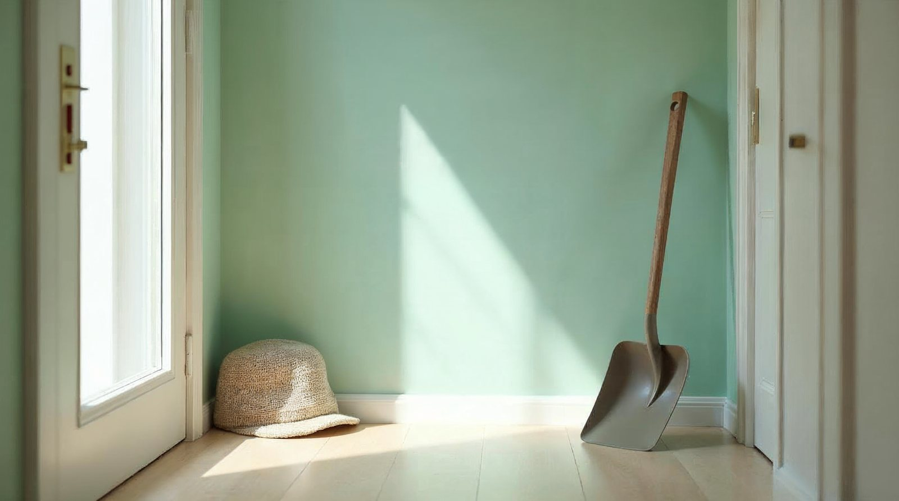
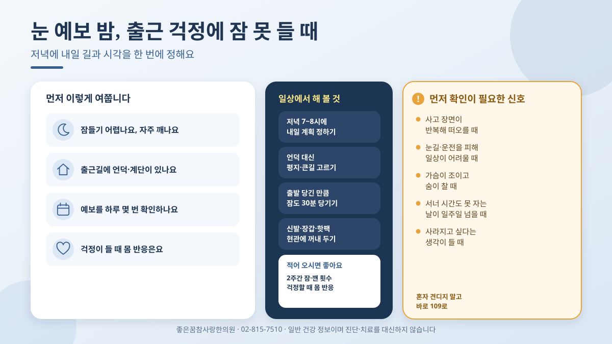

이종호 한의사 감수좋은꿈참사랑한의원 대표원장 (한의사 면허번호 19769)발행 2026-11-27 · 수정 2026-11-27
이 글의 차례
겨울 저녁 뉴스나 휴대폰 알림으로 '내일 아침 눈, 출근길 빙판 주의'라는 예보를 보면, 그때부터 머릿속이 내일 아침으로 가 버리는 분이 많습니다. 집 앞 언덕이 얼지 않을지, 차를 두고 가야 할지, 몇 시에 나서야 늦지 않을지 따지다 보면 잠자리에 누워서도 날씨 앱을 몇 번씩 새로 고치고, 새벽에 깨어 창밖을 내다보다 다시 잠들지 못하기도 합니다.
상도동처럼 비탈길과 계단이 많은 동네에 살거나, 예전에 눈길에서 미끄러지거나 차가 밀린 일을 겪은 분이라면 이런 걱정이 더 크게 다가올 수 있습니다. 내일을 대비하려는 마음은 자연스러운 것이지만, 대비가 끝난 뒤에도 생각이 멈추지 않으면 잠이 줄어 다음 날 아침 오히려 더 긴장한 몸으로 빙판길에 나서게 됩니다.
그래서 걱정을 밤까지 끌고 가지 않도록 저녁 일찍 내일 갈 길과 출발 시각, 늦을 때 보낼 연락을 정해 두고, 신발과 장갑을 현관에 꺼내 둔 뒤 예보 확인은 정해 둔 한 번으로 끝내는 순서를 권합니다. 눈 예보만 나와도 몇 주씩 가슴이 두근거리고 예전 사고 장면이 계속 떠오른다면 혼자 견디지 말고 상담을 받아 보세요.
왜 눈 예보가 나온 밤에는 잠이 얕아질까요
- 예보는 '일어날 수도 있는 일'이라 결론이 나지 않습니다. 눈이 얼마나 올지, 언제 그칠지 모르는 상태에서 머리는 여러 경우를 계속 그려 보며 대비하려고 애씁니다. 이렇게 앞일을 미리 걱정하며 몸과 마음이 긴장하는 것을 예기불안이라고 부르기도 합니다.
- 날씨 예보는 밤사이 몇 번씩 바뀝니다. 바뀔 때마다 알림이 오고 다시 확인하게 되면, 잠들려던 머리가 매번 다시 깨어납니다. 어두운 방에서 보는 밝은 화면 빛도 잠드는 시각을 늦추는 쪽으로 작용합니다.
- 내일 일찍 나서야 한다는 생각에 알람을 평소보다 30분~1시간 앞당기면, '늦잠 자면 안 된다'는 긴장 때문에 오히려 잠이 얕아지고 새벽에 몇 번씩 깨어 시계를 보게 됩니다.
- 예전에 눈길에서 넘어졌거나 차가 미끄러진 경험이 있다면, 그때의 놀람이 몸에 기억으로 남아 비슷한 예보만 들어도 가슴이 먼저 두근거리고 어깨와 종아리가 굳을 수 있습니다.
- 한파가 오는 밤에는 바깥 기온이 크게 떨어지면서 창가와 바닥에서 냉기가 올라옵니다. 몸이 식으면 자다가 깨기 쉽고, 깬 김에 창밖을 확인하다 걱정이 다시 시작됩니다.
- 어르신이나 무릎·허리가 불편한 분, 아이를 등원시켜야 하는 부모, 이른 새벽에 출근하는 분은 '내가 넘어지면 안 된다', '아이를 데리고 가다 다치면 어떡하나' 하는 책임감까지 더해져 걱정의 무게가 커집니다.
- 한의학에서는 작은 일에도 잘 놀라고 가슴이 두근거리며 잠이 얕은 모습을 심담이 허한 상태로 설명하기도 하고, 걱정이 지나치면 비위가 지쳐 입맛이 떨어지고 몸이 무거워진다고 보기도 합니다.
먼저 이렇게 여쭙니다
- 눈이나 한파 예보가 나온 밤에 주로 잠들기가 어려운지, 새벽에 자주 깨는지, 너무 일찍 깨는지 여쭙니다.
- 출근이나 등원 길이 어떤지, 언덕이나 계단이 있는지, 차를 운전하는지 대중교통을 이용하는지 여쭙니다.
- 예전에 눈길이나 빙판에서 넘어지거나 교통사고를 겪은 적이 있는지, 그 뒤로 겨울만 되면 긴장이 커졌는지 여쭙니다.
- 예보를 하루에 몇 번쯤 확인하는지, 잠자리에서도 확인하는지 여쭙니다.
- 걱정이 들 때 몸 어디에 먼저 반응이 오는지(가슴 두근거림, 명치 답답함, 어깨와 종아리 긴장, 손발 차가움) 여쭙니다.
- 늦었을 때 회사나 학교의 분위기가 어떤지, 연락할 사람이 정해져 있는지 여쭙니다.
- 눈 오는 날이 아닌 평소에도 걱정이 많아 잠을 설치는 편인지 여쭙니다.
- 아무것도 하기 싫거나 사라지고 싶다는 생각이 든 적이 있는지도 조심스럽게 여쭙니다.
일상에서 먼저 해 볼 수 있는 것
저녁 식사 전후: 내일 길과 시각 정하기
- 예보를 본 날 저녁 7~8시 사이에 내일 아침 계획을 한 번에 정합니다. 몇 시에 일어나 몇 시에 나설지, 어떤 길로 갈지, 차를 두고 갈지를 이때 결정합니다.
- 차를 두고 갈지 망설여진다면 '밤 9시 예보에서 눈이 쌓인다고 하면 지하철'처럼 기준을 하나 정해 둡니다. 기준이 있으면 밤새 고민할 거리가 줄어듭니다.
- 언덕길 대신 조금 돌아가더라도 평지나 큰길, 제설이 먼저 되는 길을 고릅니다. 상도동에서는 경사가 급한 골목보다 버스가 다니는 큰길 쪽이 먼저 정리되는 경우가 많습니다.
- 회사나 학교에 늦을 수 있다면 미리 보낼 문장을 메모장에 써 둡니다. '눈길 때문에 조금 늦을 수 있습니다, 도착하면 바로 연락드리겠습니다' 정도면 충분합니다. 써 두는 것만으로 '늦으면 어쩌지' 하는 걱정이 한결 가벼워질 수 있습니다.
- 출발 시각은 평소보다 20~30분 앞당기되, 그만큼 잠드는 시각도 30분 당깁니다. 일어나는 시각만 당기고 잠드는 시각은 그대로면 잠이 줄어 다음 날 더 긴장합니다.
밤 9시 전후: 준비물 꺼내 두기
- 바닥이 미끄럽지 않은 신발, 장갑, 목도리, 핫팩을 현관에 꺼내 둡니다. 손을 주머니에 넣지 않고 걸을 수 있도록 장갑을 챙깁니다.
- 가방은 한쪽 어깨에 메는 것보다 양쪽 어깨에 메는 배낭이 균형을 잡기에 편합니다. 짐은 미리 덜어 둡니다.
- 차를 가져가야 한다면 와이퍼를 세워 두고 앞유리 덮개를 씌워 두면 아침 준비가 줄어듭니다. 연료가 넉넉한지도 저녁에 확인합니다.
- 아이를 등원시켜야 한다면 아이 옷과 장갑, 여벌 양말도 같은 자리에 둡니다.
- 마지막으로 예보를 한 번 확인하고, 그 뒤에는 날씨 앱 알림을 꺼 둡니다. 밤사이 예보가 조금 바뀌어도 이미 정한 계획은 크게 달라지지 않습니다.
잠자리에서
- 휴대폰은 잠자리에서 손이 닿지 않는 곳에서 충전합니다. 창밖 확인도 '아침에 일어나서 한 번'으로 정합니다.
- 누워서 걱정이 몰려오면 발끝부터 머리끝까지 차례로 힘이 들어간 곳을 찾아 하나씩 풀어 봅니다. 종아리, 엉덩이, 배, 어깨, 턱 순서로 3초씩 살짝 힘을 주었다가 숨을 길게 내쉬며 놓습니다.
- 생각이 내일 아침 장면으로 자꾸 넘어가면 지금 들리는 소리 세 가지, 몸에 닿는 느낌 세 가지를 차례로 떠올려 주의를 지금 이 방으로 돌립니다.
- 한파가 오는 밤에는 창가에서 머리를 조금 떨어뜨리고, 발이 찬 분은 얇은 수면 양말을 신습니다. 난방을 지나치게 올리면 새벽에 덥고 건조해 깨기 쉬우니 실내를 20~22도 정도로 맞춥니다.
새벽에 깼을 때
- 시계와 창밖을 보지 않습니다. 이미 계획은 정해져 있다고 스스로에게 말하고, 머리맡 메모지에 떠오른 걱정을 한 줄 적은 뒤 다시 눈을 감습니다.
- 20분쯤 지나도 잠이 오지 않으면 어두운 거실로 나가 조용히 앉아 있다가 졸릴 때 돌아옵니다.
아침에 나설 때
- 집을 나서기 전 종아리와 발목을 1~2분 돌려 풀어 둡니다. 몸이 굳은 채로 나서면 미끄러질 때 균형을 잡기 어렵습니다.
- 빙판에서는 보폭을 평소의 절반쯤으로 줄이고, 발바닥 전체로 바닥을 디디며, 몸을 약간 앞으로 기울여 천천히 걷습니다. 계단에서는 난간을 잡습니다.
- 걸음을 서두르게 만드는 것은 대개 시간입니다. 정해 둔 출발 시각에 나서면 그 자체로 마음이 덜 급해집니다.
상황별 예시
- 예를 들어 상도동 언덕 위에 사는 30대 직장인이 눈 예보를 본 밤마다 차를 가져갈지 말지 정하지 못해 자정이 넘도록 날씨 앱을 새로 고치는 경우, 저녁 8시에 '눈이 쌓인다는 예보면 지하철'이라는 기준을 정하고, 밤 9시 확인 뒤 알림을 끄는 것부터 해 봅니다. 결정이 끝나 있으면 잠자리에서 붙잡을 생각이 하나 줄어듭니다.
- 예를 들어 지난겨울 눈길에서 넘어져 손목을 다친 적이 있는 60대가, 눈 소식만 들으면 그 장면이 떠오르고 종아리에 힘이 들어가 밤새 뒤척이는 경우, 다음 날 꼭 나가야 하는 일인지 먼저 따져 보고 미룰 수 있으면 하루 미룹니다. 나가야 한다면 미끄럼 방지 신발과 지팡이, 난간이 있는 길을 미리 정하고, 가족에게 나서는 시각을 알려 둡니다.
- 예를 들어 아이를 어린이집에 데려다주고 출근해야 하는 맞벌이 부모가, 눈 오는 아침에 유모차를 끌고 비탈길을 내려갈 생각에 잠을 설치는 경우, 전날 밤 배우자와 누가 등원을 맡을지, 유모차 대신 아기띠나 손을 잡고 걸을지, 어린이집에 늦을 수 있다는 연락은 누가 할지 정해 둡니다. 역할이 정해져 있으면 아침 실랑이가 줄어듭니다.
- 예를 들어 노량진에서 아침 첫 수업을 들어야 하는 수험생이 눈 예보에 첫차를 놓칠까 봐 새벽 3시부터 깨어 있는 경우, 알람을 두 개 맞춰 두되 하나는 손이 닿지 않는 곳에 두고, 전날 잠드는 시각을 30분 당겨 봅니다. 수업에 조금 늦더라도 다시 보기 강의나 동료의 필기로 메울 방법이 있는지 미리 알아 두면 마음이 덜 급해집니다.
- 예를 들어 예전에 눈길 교통사고를 겪은 뒤로 눈만 오면 운전대를 잡기가 두렵고, 사고 장면이 꿈에 나와 깨는 일이 몇 주째 이어지는 경우에는 생활 조절만으로 버티기보다 상담을 함께 받아 보시길 권합니다.
자주 하는 오해
- 예보를 자주 확인할수록 더 잘 대비할 수 있다고 여기기 쉽지만, 밤사이 확인은 계획을 바꾸기보다 걱정을 키우는 경우가 더 많습니다. 저녁에 정한 계획을 믿고 아침에 한 번 다시 보는 정도면 충분합니다.
- 일찍 일어나야 하니 아예 밤을 새우는 편이 낫다고 생각하는 분도 있습니다. 잠이 부족하면 반응이 느려지고 균형 감각도 떨어져 빙판길에서 더 위험할 수 있습니다.
- 이렇게까지 걱정하는 건 겁이 많아서라고 자신을 탓하는 분이 있지만, 미끄러운 길을 경계하는 것은 몸을 지키려는 자연스러운 반응입니다. 다만 그 반응이 잠까지 빼앗지 않도록 순서를 정리하는 것이 필요합니다.
- 술 한 잔 마시고 자면 걱정이 덜하다고 여기기 쉽지만, 술은 새벽에 깨는 일을 늘리고 다음 날 아침 몸을 둔하게 만들 수 있습니다.
- 예전 사고가 오래전 일이니 이제 와서 힘든 건 이상하다고 생각하는 분도 있습니다. 놀란 경험은 시간이 지나도 비슷한 계절과 날씨에 다시 떠오를 수 있습니다.
스스로 점검해 보세요
- 눈이나 한파 예보가 나온 밤에는 잠드는 데 평소보다 30분 이상 더 걸린다.
- 잠자리에서도 날씨 앱이나 교통 정보를 여러 번 확인한다.
- 다음 날 갈 길과 출발 시각을 정하지 못한 채 잠자리에 드는 날이 많다.
- 눈 소식만 들어도 가슴이 두근거리거나 종아리, 어깨에 힘이 들어간다.
- 새벽에 깨어 창밖을 확인한 뒤 다시 잠들지 못한 적이 있다.
- 예전 눈길 사고나 넘어진 장면이 겨울마다 떠오른다.
- 걱정 때문에 꼭 필요한 외출이나 운전까지 피하게 되어 일상이 불편하다.

한의원에서 함께 살필 수 있는 경우
- 날씨나 다음 날 일정 같은 앞일 걱정으로 잠을 설치는 날이 일주일에 두세 번 이상 이어지는 경우
- 걱정할 때마다 가슴이 두근거리거나 명치가 답답하고, 어깨와 종아리가 굳는 몸의 반응이 함께 오는 경우
- 예전에 넘어지거나 사고를 겪은 뒤 겨울만 되면 몸이 먼저 긴장하는 경우
- 손발이 차고 추위를 많이 타서 한파가 오는 밤마다 자다 깨는 경우
좋은꿈참사랑한의원에서는 첫 방문 때 요즘 잠이 어떤지, 어떤 날에 특히 잠을 설치는지, 걱정이 들 때 몸 어디가 먼저 반응하는지 차례로 여쭙습니다. 예전 사고나 넘어진 일에 대해서는 편하신 만큼만 말씀하시면 됩니다. 그다음 맥부터 짚어 보고, 혀와 배를 살피며 손발의 온기와 어깨, 종아리의 긴장 정도를 함께 확인합니다.
그 뒤 저녁에 계획을 정하는 순서, 예보 확인 횟수, 잠자리에서 몸을 푸는 방법처럼 생활에서 해 볼 것을 함께 정하고, 필요하면 침이나 한약을 상의합니다. 다시 오시면 지난번 이야기를 이어서 여쭙고, 눈 오는 날과 그렇지 않은 날의 잠 기록을 나란히 놓고 함께 봅니다.
얼마나 지켜보고 언제 상담할까요
- 눈이나 한파 예보가 나올 때마다 저녁 계획 정하기와 알림 끄기를 두세 번 해 보며, 잠드는 시간과 깬 횟수를 기록합니다.
- 예보가 있는 밤에만 잠깐 잠을 설치고 다음 날부터 평소 잠으로 돌아온다면, 정해 둔 순서를 겨울 동안 이어 가며 지켜봅니다.
- 날씨와 상관없이 걱정 때문에 잠을 설치는 날이 2주 넘게 이어지거나, 걱정 때문에 출근과 외출 같은 일상이 흔들린다면 상담을 받아 보세요.
- 아래 신호가 있으면 기다리지 말고 도움을 청합니다.
이렇게 기록해 오시면 상담이 쉬워집니다
- 2주 동안의 잠드는 시각, 깬 횟수와 시각, 일어난 시각(예보가 있던 날 표시)
- 예보가 있던 날 저녁에 정한 계획과 날씨 확인 횟수
- 걱정이 들 때 몸의 반응(두근거림, 답답함, 근육 긴장, 손발 차가움)
- 예전 눈길 사고나 넘어진 경험이 있다면 대략의 시기와 지금 남아 있는 불편
- 출퇴근 길과 이동 수단, 하루 걷는 시간
- 복용 중인 약과 영양제
이런 증상은 먼저 확인이 필요합니다
- 예전 사고 장면이 원치 않는데도 반복해서 떠오르거나, 그 장면이 꿈에 나와 깨는 일이 몇 주째 이어지는 경우
- 눈길이나 운전과 관련된 상황을 피하느라 출근이나 일상생활이 어려운 경우
- 스스로를 해칠 생각이 들면 ☎ 109로 바로 연락하세요.
이런 신호가 있으면 한의원보다 가까운 병원이나 응급실을 먼저 찾으세요.
관련 글
- 걱정이 많아서 잠이 안 올 때는 어떻게 살피나요?
- 잠자리 옆에 걱정 노트를 두면 밤의 생각이 어떻게 달라질 수 있나요?
- 눈 오는 날 상도역에서 한의원까지는 어떻게 오면 안전한가요?

여쭙는 것
- 눈이나 한파 예보가 나온 밤에 주로 잠들기가 어려운지, 새벽에 자주 깨는지, 너무…
- 출근이나 등원 길이 어떤지, 언덕이나 계단이 있는지, 차를 운전하는지 대중교통을 이…
- 예전에 눈길이나 빙판에서 넘어지거나 교통사고를 겪은 적이 있는지, 그 뒤로 겨울만…
생활에서 해 볼 것
- 예보를 본 날 저녁 7~8시 사이에 내일 아침 계획을 한 번에 정합니다. 몇 시에…
- 차를 두고 갈지 망설여진다면 '밤 9시 예보에서 눈이 쌓인다고 하면 지하철'처럼 기…
- 언덕길 대신 조금 돌아가더라도 평지나 큰길, 제설이 먼저 되는 길을 고릅니다. 상도…
한의원에서 함께 살필 것
- 날씨나 다음 날 일정 같은 앞일 걱정으로 잠을 설치는 날이 일주일에 두세 번 이상…
- 걱정할 때마다 가슴이 두근거리거나 명치가 답답하고, 어깨와 종아리가 굳는 몸의 반응…
- 예전에 넘어지거나 사고를 겪은 뒤 겨울만 되면 몸이 먼저 긴장하는 경우
먼저 확인이 필요한 신호
- 예전 사고 장면이 원치 않는데도 반복해서 떠오르거나, 그 장면이 꿈에 나와 깨는 일…
- 눈길이나 운전과 관련된 상황을 피하느라 출근이나 일상생활이 어려운 경우
- 스스로를 해칠 생각이 들면 109로 바로 연락하세요.
한눈에 보는 표
| 구분 | 핵심 |
|---|---|
| 여쭙는 것 | 눈이나 한파 예보가 나온 밤에 주로 잠들기가 어려운지, 새벽에 자주 깨는지, 너무 일찍 깨는지 여쭙니다. 출근이나 등원 길이 어떤지, 언덕이나 계단이 있는지, 차를 운전하는지 대중교통을 이용하는지 여쭙니다. |
| 생활에서 해 볼 것 | 예보를 본 날 저녁 7~8시 사이에 내일 아침 계획을 한 번에 정합니다. 몇 시에 일어나 몇 시에 나설지, 어떤 길로 갈지, 차를 두고 갈지를 이때 결정합니다. 차를 두고 갈지 망설여진다면 '밤 9시 예보에서 눈이 쌓인다고 하면 지하철'처럼 기준을 하나 정해 둡니다. 기준이 있으면 밤새 고민할 거리가 줄어듭니다. |
| 한의원에서 함께 살필 것 | 날씨나 다음 날 일정 같은 앞일 걱정으로 잠을 설치는 날이 일주일에 두세 번 이상 이어지는 경우 걱정할 때마다 가슴이 두근거리거나 명치가 답답하고, 어깨와 종아리가 굳는 몸의 반응이 함께 오는 경우 |
| 먼저 확인이 필요한 신호 | 예전 사고 장면이 원치 않는데도 반복해서 떠오르거나, 그 장면이 꿈에 나와 깨는 일이 몇 주째 이어지는 경우 눈길이나 운전과 관련된 상황을 피하느라 출근이나 일상생활이 어려운 경우 |
자주 묻는 질문
눈 예보가 나온 밤에만 잠을 설치는데 상담까지 필요할까요?
예보가 있는 밤에만 잠깐 설치고 다음 날부터 평소 잠으로 돌아온다면, 저녁에 계획을 정하고 알림을 끄는 순서부터 해 보셔도 됩니다. 날씨와 상관없이 걱정으로 잠을 설치는 날이 2주 넘게 이어지면 상담을 받아 보세요.
다음 날 일찍 나서야 하면 몇 시에 자는 게 좋을까요?
일어나는 시각을 당긴 만큼 잠드는 시각도 함께 당기는 것이 좋습니다. 출발을 30분 앞당긴다면 잠자리에 드는 시각도 30분쯤 앞당겨 평소 잠 시간을 지켜 보세요.
예전 눈길 사고가 자꾸 떠오르는 것도 함께 이야기해도 되나요?
네, 편하신 만큼 말씀해 주시면 됩니다. 몸에 남은 긴장과 잠을 함께 살피고, 장면이 반복해서 떠오르거나 꿈에 나와 깨는 일이 날은 기록해 두셨다가 다음 진료 때 함께 보면 좋습니다.
눈 오는 날 한의원에는 어떻게 가면 되나요?
상도역 3번 출구로 나와 약 200m 직진한 뒤 오거리에서 우회전해 약 200m 오시면 됩니다. 노량진역(1·9호선) 3번 출구에서는 마을버스 동작01을 타고 신동아리버파크에서 내리시면 됩니다. 길이 미끄러운 날에는 시간을 넉넉히 잡고 천천히 오세요.
진료 시간은 어떻게 되나요?
평일은 오전 9시 30분부터 오후 8시까지이며 점심시간은 오후 1시부터 2시까지입니다. 토·일·공휴일은 오전 9시 30분부터 오후 3시까지 점심시간 없이 진료합니다. 눈이 많이 오는 날 궁금한 점이 있으시면 방문 전 02-815-7510으로 전화해 확인해 주세요.
좋은꿈참사랑한의원은 재진 때 지난번 이야기부터 이어서 여쭙니다. 진료시간과 예약은 오시는 길에서 확인하세요.
어디서 상담받을 수 있나요?
좋은꿈참사랑한의원은 서울 동작구 만양로2길 2 신성빌딩 3층·5층(서울 동작구 상도동, 7호선 상도역 3번 출구 근처)에 있습니다. 한의사 3명(이종호 대표원장, 조영기 수석진료원장, 정원영 진료원장)이 진료합니다. 진료시간은 평일 09:30~20:00(점심 13:00~14:00), 토·일·공휴일 09:30~15:00이며, 방문 전 전화로 확인을 권합니다. 예약은 네이버 예약, 카카오톡 상담, 전화 02-815-7510로 받습니다.
이 글은 일반적인 건강 정보이며 개인의 진단이나 치료를 대신하지 않습니다. 증상이 있거나 복용 중인 약이 있다면 진료를 통해 확인하세요. 치료 효과는 개인마다 다를 수 있습니다.
작성 기준: 일반적으로 알려져 있는 건강 정보를 참고해 정리했습니다(대표원장 감수). 증상 기록은 1~2주 동안 하루 1회, 비슷한 시간에 적어 오시면 지난 상태와 비교하기 쉽습니다.